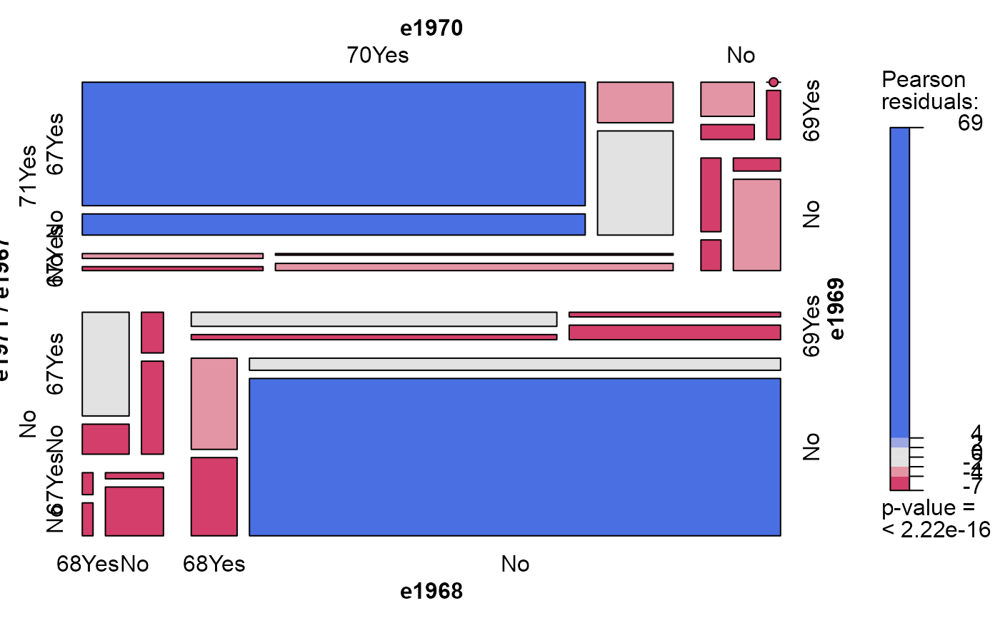
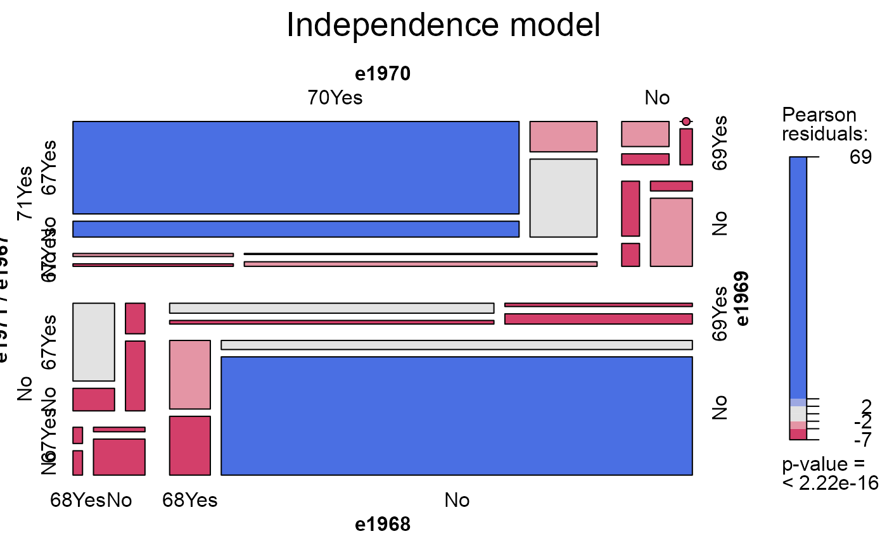
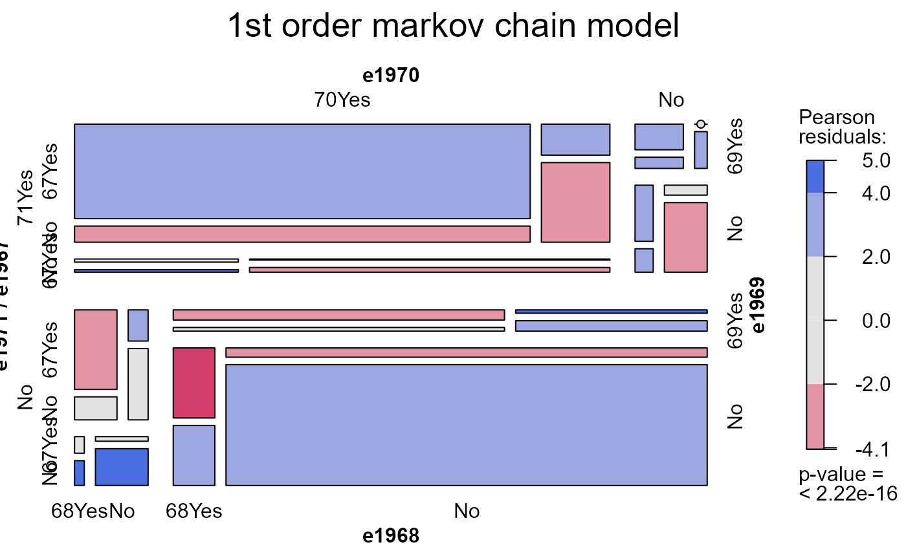
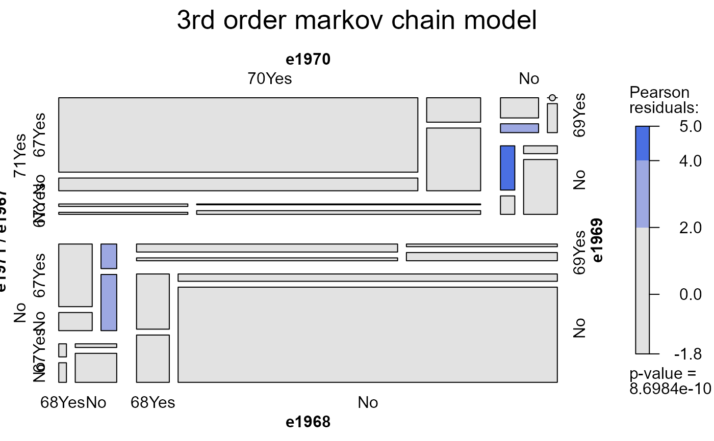

1583 married women were surveyed over the years 1967-1971, recording whether or not they were employed in the labor force.
Format
A 5-dimensional \(2^5\) array resulting from cross-tabulating 5 binary variables for 1583 observations. The variable names and their levels are:
| No | Name | Levels |
| 1 | e1971 | "71Yes", "No" |
| 2 | e1970 | "70Yes", "No" |
| 3 | e1969 | "69Yes", "No" |
| 4 | e1968 | "68Yes", "No" |
| 5 | e1967 | "67Yes", "No" |
Source
Lindsey, J. K. (1993). Models for Repeated Measurements Oxford, UK: Oxford University Press, p. 185.
Details
The data, originally from Heckman & Willis (1977) provide an example of modeling longitudinal categorical data, e.g., with markov chain models for dependence over time.
Lindsey (1993) fits an initial set of logistic regression models examining
the dependence of employment in 1971 (e1971) on successive subsets of
the previous years, e1970, e1969, ... e1967.
Alternatively, one can examine markov chain models of first-order (dependence on previous year), second-order (dependence on previous two years), etc.
References
% HeckmanWillis:77 Heckman, J.J. & Willis, R.J. (1977). "A beta-logistic model for the analysis of sequential labor force participation by married women." Journal of Political Economy, 85: 27-58
Examples
data(Heckman)
# independence model
mosaic(Heckman, shade=TRUE)

# same, as a loglm()
require(MASS)
(heckman.mod0 <- loglm(~ e1971+e1970+e1969+e1968+e1967, data=Heckman))
#> Call:
#> loglm(formula = ~e1971 + e1970 + e1969 + e1968 + e1967, data = Heckman)
#>
#> Statistics:
#> X^2 df P(> X^2)
#> Likelihood Ratio 3824.863 26 0
#> Pearson 8747.019 26 0
mosaic(heckman.mod0, main="Independence model")

# first-order markov chain: bad fit
(heckman.mod1 <- loglm(~ e1971*e1970 + e1970*e1969 +e1969*e1968 + e1968*e1967, data=Heckman))
#> Call:
#> loglm(formula = ~e1971 * e1970 + e1970 * e1969 + e1969 * e1968 +
#> e1968 * e1967, data = Heckman)
#>
#> Statistics:
#> X^2 df P(> X^2)
#> Likelihood Ratio 210.2251 22 0
#> Pearson 254.8971 22 0
mosaic(heckman.mod1, main="1st order markov chain model")

# second-order markov chain: bad fit
(heckman.mod2 <- loglm(~ e1971*e1970*e1969 + e1970*e1969*e1968 +e1969*e1968*e1967, data=Heckman))
#> Call:
#> loglm(formula = ~e1971 * e1970 * e1969 + e1970 * e1969 * e1968 +
#> e1969 * e1968 * e1967, data = Heckman)
#>
#> Statistics:
#> X^2 df P(> X^2)
#> Likelihood Ratio 62.67163 16 1.845162e-07
#> Pearson 75.99393 16 8.698373e-10
mosaic(heckman.mod2, main="2nd order markov chain model")
# third-order markov chain: fits OK
(heckman.mod3 <- loglm(~ e1971*e1970*e1969*e1968 + e1970*e1969*e1968*e1967, data=Heckman))
#> Call:
#> loglm(formula = ~e1971 * e1970 * e1969 * e1968 + e1970 * e1969 *
#> e1968 * e1967, data = Heckman)
#>
#> Statistics:
#> X^2 df P(> X^2)
#> Likelihood Ratio 9.023246 8 0.3403388
#> Pearson 8.155529 8 0.4184270
mosaic(heckman.mod2, main="3rd order markov chain model")
